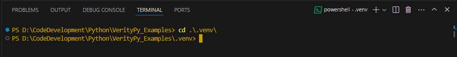
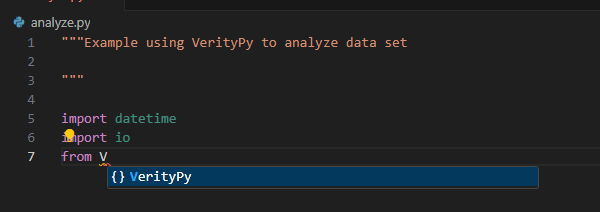

Analyze Data Records#
Perform a deep inspection of data sets and use the muiti-faceted results to evaluate the quality, conformance and presence of errors.
Goal#
The goal of analysis is to characterize data to know its structure, range of values, and presence of anomalies in relation to what it should be as defined by its architecture. Ideally, the documentation would describe the details of how it was collected, stored, and the meaning of the data in the context of its intended use. In this ideal case, unit tests could be made to automatically measure quality metrics both as the data is received and processed, and as it is distributed and used. Unfortunately, this ideal situation rarely exists and we are forced to manage data with uncertain quality, pedigree, and trustworthiness. When the use can tolerate imperfect data then this is not much of a problem. However, we now have increasingly stringent needs for better data to feed Artificial Intelligence (AI), Data Science (DataSci), and more sophisticated forecasting models in financial markets, global supply chain, consumer activity, and many others.
Objectives#
We have learned from in-depth analysis and thorough reconstruction of data sets across many fields and types of data systems that there are several specific types of anomalies that frequenetly exist and go undetected by even the most modern tools. Part of this expert assessment included following and measuring the impact of the imperfect data on the end-use business activities for how outcome errors impacted decision making, audit, compliance, analytics, forecast accuracy, etc. From this we created a combined human expert and big data Machine Learning (ML) technology to filter through all data to find several types of problems and reliable approaches to correcting them automatically. This led to the following key objectives of the VerityX (X denotes both the Python and DotNet libraries) analysis process:
- capture details of field datatype and format for all records and visibly showcase even infrequent variations.
many tools limit the depth and breadth of records analyzed and variations captured due to processing, memory, and storage limitations.
capture complete range of values for each field and emphasize low frequency instances since this is how anomalies can be quickly discovered.
capture complete range of values for combinations of several fields
track number of field values parsed per record as key indicator of presence of extra delimiters and line feeds that are not apparent during human review but which cause parsing code to break what should be a single record into multiple partial records or generate more field values than there are fields. This is surprisingly common in many mid and large size data systems.
provide automated correction algorithms that repair all of the above problems with minimal required data architecture and engineering which tends to be so complicated and labor intensive that it often lags actual data causing serious ‘technical debt’.
provide multiple views and types of results into data quality and problems since real world data teams are typically too constrained in time and personnel to probe every data set, system, and operation in detail.
Practice Continual Improvement#
VerityX is designed for iteratively improving data set quality and enriching. It is counter-productive to attempt to define every detail of a data set’s structure, meaning, and use case rules in one lengthy requirements gathering process. It is too complicated, laborious and prone to error. Instead, characterize data with an initial deep assessment and use the results to discover what is correct, what is a problem, and what needs to be clarified. Adjusting the VerityX job with ever increasing specificity is purposefully easy to do, and a core design principle to allow all team members including non-technical business workers and managers to review the business rules and resulting outcomes.
A typical workflow will be:
Organize source data file(s) and use a text editor to view the top of the file to determine its basic structure for:
is there a header line of field titles
what delimiter is used
are there comment lines starting with either # or //
are there empty lines
are there any obvious problems like lines that are much too short or long, odd characters that do not belong in the type of data, values that are inconsistent compared to most records
Create a small application (Python or C# DotNet depending on library used) to read in the file’s records, provide settings, define fields. See examples on support web site and the Python sample below.
Iterate: Analyze, Review, Adjust
submit data to analysis function
review results: datatype and format distributions per field, unique values per field, record size distribution, special characters
adjust Field definitions to include datatypes and formats based on results to improve granularity of analysis results
Iterate: Remediate, Normalize, Enrich
define transforms, add enrichment fields, normalize value ranges
submit data to remediation function
review result statistics and corrected, normalized, enriched output data: view with text editor, load into Excel, use Jupyter Notebook template
Use new data in end use case and assess results
analytics: pick a few samples and thoroughly review to see if values and category and numeric aggregations make sense and agree with known outcomes
Data Science: check statistical scalars and distributions to predictions and historical data
AI/ML: include in models and review changes, sensitivities, calibration to prior known test cases, reasonableness of future predictions
Python Example#
For this example, we use Visual Studio Code (VSC) on Windows 11. The first step is to open VSC, create a new folder, create a new file, save the empty file as a .py file which we do as ‘analyze.py’. Then we create a virtual environment using the Command Palette.
Note that we must install VerityPy in this virtual environment. To do so, open a Terminal in VSC and change to the .venv folder.
Run the pip install command: pip install –upgrade VerityPy
If successful, you will see it recognized when you enter an import statement.
We start adding the basics to the py file including docstring, imports, defining constants, creating __main__ function, and creating a function to run when we debug.
"""Example using VerityPy to analyze data set
"""
import datetime
from VerityPy.processing import datefuncs, qualityanalysis, analyzequality, field
DQ:str="\""
def runtest()->None:
"""Runtest performs example analysis on sample data
"""
if __name__ == "__main__":
runtest()
Read Data File#
We read in the sample data file thats has a header line from which we make a list of fields. We use the Field object defined in the VerityPy.field module. Also, we set up variables for key data items.
delim: delimiter character for records in data file
title: working variable for conditional assignment of field details
temp: working list
flds: list of field.Field objects that are the source data fields and include their datatypes and formats
rec: list of strings which are the lines read from data file
covalues: list of strings defining joint fields to capture their unique value combinations
settings: dict object with keys = parameter names for the analyzequality.do_qualityinspect function
report: a qualityanalysis.QualityAnalysis object containing analysis results
nline: working integer variable counting lines read from data file
delim:str=","
title:str=""
temp:list=[]
flds:list=[]
recs:list=[]
covalues:list=[]
settings:dict={}
report:qualityanalysis.QualityAnalysis= qualityanalysis.QualityAnalysis()
nline:int=-1
txt:str=""
txt1:str=""
try:
print("Starting runtest at " + datefuncs.get_current_iso_datetime(True))
# read in sample data records and make fields from header line
with open("files\IRSMigration_WithErrors_Hdr.csv","r",encoding="utf-8") as f:
nline=0
for line in f:
if line is None:
break
if line.endswith("\r\n"):
line=line[:-2]
if line.endswith("\r") or line.endswith("\n"):
line=line[:-1]
if len(line)>0 and not line.startswith("#") and not line.startswith("//"):
# we ignore empty and comment lines
nline += 1
if nline==1:
# 1st line is header of delimited field names
if line.find(DQ)>-1:
line=line.replace(DQ,'')
temp= line.split(delim)
for s in temp:
# create list of Field objects
flds.append(field.Field(s.strip()))
else:
# make list of data records after we handled header
recs.append(line)
except (RuntimeError, OSError, ValueError) as err:
print("ERROR! " + str(err))
Specify Field Characteristics#
With the basic Field objects defined, we add more detail about each one that we gathered from documentation. Also, we define one coValue to collect as a joint value distribution for fields ‘y1_state’ and ‘y1_state_name’ which are the code and name of a state in each record. If the joint value distribution shows variation in these combinations then that is a direct indicator of errors needing further investigation.
# add detail to the Field objects using information from documentation: assign datatypes and formats
for i in range(len(flds)):
title= flds[i].title.lower()
if title in ["y2_statefips","y1_statefips"]:
flds[i].datatype="string"
flds[i].fmt_strlen=2 # this specifies that the value should be 2 characters
elif title=="y1_state":
flds[i].datatype="string"
flds[i].fmt_strcase="upper" # this specifies that the value should be uppercase
flds[i].fmt_strlen=2
elif title=="y1_state_name":
flds[i].datatype="string"
elif title in ["n1","n2"]:
flds[i].datatype="int"
elif title=="agi":
flds[i].datatype="real"
flds[i].fmt_decimal=0
covalues.append("y1_state,y1_state_name")
We make the settings dict to pass into the analysis function. Since we separated the header from the records as we read the data file we set this parameter to False. Also, we set parameters for:
case sensitivity False
values possibly enclosed in double quotes True
option to extract fields from data set False
delimiter is comma
maximum number of unique values to collect per field to 100
settings['is_case_sens']="false"
settings['is_quoted']="true"
settings['has_header']="false"
settings['extract_fields']="false"
settings['delim']="comma"
settings["delim_out"]="pipe"
settings['maxuv']="100"
Perform Analysis#
Now we can call the analysis function and receive the report (a qualityanalysis.QualityAnalysis object) as result. All VerityPy functions trap exceptions and supply a formatted error message if they occur that has the form ‘notok:xxxxx’. Function responses should always be checked for this situation.
report=analyzequality.do_qualityinspect(flds, covalues, recs, settings)
if report.status.startswith("notok:"):
raise ValueError("error from report:" + report.status[6:])
Review Results#
We explore some of the results available in the report object. The full range of analysis results is described in the FUNCTIONS and OBJECTS pages of this guide. Look through the information with special notice of the following items which indicate problems, what they look like, and where they occur in the source data. Summary information highlights existence of problems with:
number records with errors (overall, datatype, format)
some field qualities less than 100
Specific datatype errors per field such as n2 having some non-numeric values
Specific format errors especially the examples
Parsing error small2 examples
From these, we get more detailed insight into the characteristics of problems with:
- bottom unique values
y2_statefips clearly has non-FIPS values such as ‘migrants’ and ‘non-’
y1_statefips clearly has non-FIPS values such as ‘1598458’
- y1_state_name is the most obvious that there are problems not just with the structure of the data
but also the specification of the fields and the actual values within these fields that violate the specification such as ‘dc total migration-foreign’
- covalue unique values
value of ‘de_de total migration-same state’ similarly indicates design problem of data set
- special character unicode_9658 should not be in this type of data at all and is not merely a low
occurence value error but demonstrates underlying problems with the processes of QC managing the data
Summary information#
print(f"Number of fields = {len(report.fields)}")
print(f"field titles:{','.join(x.title for x in report.fields)}")
print(f"Number of records = {report.numrecs}")
print(f"Number of records with errors = {report.err_stats['numrecs_err']}")
print(f"Number of records with datatype errors = {report.err_stats['numrecs_err_datatype']}")
print(f"Number of records with format errors = {report.err_stats['numrecs_err_fmt']}")
print("Field Quality:")
for i in range(len(report.fields)):
print(f"field {report.fields[i].title} has {report.field_quality[i]} quality metric")
This generates information to the Terminal window. Not all of the results are displayed just a sample for this guide’s. We see there are errors detected with datatypes and formats, and which fields have reduced quality.
Starting runtest at 20240709T201655
Number of fields = 7
field titles:y2_statefips,y1_statefips,y1_state,y1_state_name,n1,n2,AGI
Number of records = 1003
Number of records with errors = 20
Number of records with datatype errors = 12
Number of records with format errors = 12
Field Quality:
field y2_statefips has 95.2 quality metric
field y1_statefips has 95.2 quality metric
field y1_state has 90.7 quality metric
field y1_state_name has 100 quality metric
field n1 has 99.5 quality metric
field n2 has 99.3 quality metric
field AGI has 93.3 quality metric
Errors in Fields with Examples#
Looking deeper into the datatype and formats errors we see both the reasons per field and examples of the data line as read from file.
if report.err_stats['numrecs_err_datatype']>0:
print("\nDatatype Errors per Field:")
for fldname in report.err_stats['fields_err_datatype']:
print(f"\nfield {fldname} had {report.err_stats['fields_err_datatype'][fldname]['count']} datatype errors")
for reason in report.err_stats['fields_err_datatype'][fldname]['reasons']:
print(f" reason={reason} {report.err_stats['fields_err_datatype'][fldname]['reasons'][reason]} times")
print("\n10 Datatype Error Examples as: (nline)[field:reason:value]|[field:reason:value]..... ")
for i in range(len(report.err_datatype_examples)):
if i>10:
break
print(report.err_datatype_examples[i])
if report.err_stats['numrecs_err_fmt']>0:
print("\nFormat Error Details:")
for fldname in report.err_stats['fields_err_fmt']:
print(f"\nfield {fldname} had {report.err_stats['fields_err_fmt'][fldname]['count']} format errors")
for reason in report.err_stats['fields_err_fmt'][fldname]['reasons']:
print(f" reason={reason} {report.err_stats['fields_err_fmt'][fldname]['reasons'][reason]} times")
print("\n10 Format Error Examples as (nline)[field:reason:value]|[field:reason:value].....")
for i in range(len(report.err_fmt_examples)):
if i>10:
break
print(report.err_fmt_examples[i])
Datatype Errors per Field:
field n2 had 7 datatype errors
reason=non-numeric 2 times
reason=empty 5 times
field n1 had 5 datatype errors
reason=empty 5 times
field agi had 10 datatype errors
reason=empty 5 times
reason=non-numeric 5 times
10 Datatype Error Examples as (nline)[field:reason:value]|[field:reason:value].....
(2)[n2:non-numeric:x65647]
(4)[n1:empty:-empty-]|[n2:empty:-empty-]|[agi:empty:-empty-]
(5)[n1:empty:-empty-]|[n2:empty:-empty-]|[agi:empty:-empty-]
(6)[n1:empty:-empty-]|[n2:empty:-empty-]|[agi:empty:-empty-]
(7)[n1:empty:-empty-]|[n2:empty:-empty-]|[agi:empty:-empty-]
(8)[n1:empty:-empty-]|[n2:empty:-empty-]|[agi:empty:-empty-]
(17)[n2:non-numeric:$2100]
(18)[agi:non-numeric:$48796]
(24)[agi:non-numeric:27082ê]
(25)[agi:non-numeric:24958‼]
(26)[agi:non-numeric:20884§]
Format Error Details:
field y2_statefips had 4 format errors
reason=string incorrect length 4 times
field y1_statefips had 3 format errors
reason=string incorrect length 3 times
field y1_state had 8 format errors
reason=string incorrect length 3 times
reason=string not uppercase 5 times
field agi had 3 format errors
reason=real incorrect decimals 3 times
10 Format Error Examples as (nline)[field:reason:value]|[field:reason:value].....
(5)[y2_statefips:string incorrect length:State]|[y1_statefips:string incorrect length:46630]|[y1_state:string incorrect length:95832]
(7)[y2_statefips:string incorrect length:Non-]|[y1_statefips:string incorrect length:-empty-]|[y1_state:string incorrect length:-empty-]
(8)[y2_statefips:string incorrect length:migrants]|[y1_statefips:string incorrect length:1598458]|[y1_state:string incorrect length:3579600]
(10)[agi:real incorrect decimals:1.85502e+5]
(18)[y2_statefips:string incorrect length:1]
(19)[y1_state:string not uppercase:ny]
(20)[y1_state:string not uppercase:il]
(21)[y1_state:string not uppercase:oh]
(22)[y1_state:string not uppercase:sc]
(23)[y1_state:string not uppercase:mi]
(36)[agi:real incorrect decimals:9052.00]
Parsing Problems#
Parsing problems are one of the most serious issues to deal with and one of the most pernicious if not discovered. These usually cause errors with many outcomes if the data is used in downstream applications. Here, we see the type, quanitity, file location, and example of several problem source records.
print("\nParsing Errors- examples are (nRec)linein:")
# limit to 4 examples
print(f"Small1= {report.rec_parse_errs['small1']}")
if len(report.rec_parse_errs['small1_recs'])>0:
for i in range(len(report.rec_parse_errs['small1_recs'])):
if i>4:
break
print(f" example:{report.rec_parse_errs['small1_recs'][i]}")
print(f"Small2= {report.rec_parse_errs['small2']}")
if len(report.rec_parse_errs['small2_recs'])>0:
for i in range(len(report.rec_parse_errs['small2_recs'])):
if i>4:
break
print(f" example:{report.rec_parse_errs['small2_recs'][i]}")
print(f"Big= {report.rec_parse_errs['big']}")
if len(report.rec_parse_errs['big_recs'])>0:
for i in range(len(report.rec_parse_errs['big_recs'])):
if i>4:
break
print(f" example:{report.rec_parse_errs['big_recs'][i]}")
Parsing Errors- examples are (nRec)linein:
Small1= 0
Small2= 5
example:(4)01,97,AL,AL Total Migration-Same
example:(5)State,46630,95832,1.871804e+6
example:(6)01,01,AL,AL
example:(7)Non-
example:(8)migrants,1598458,3579600,96406319
Big= 0
Unique Values#
Unique Values are a core component of any data profile. It provides awareness of the actual structure and value ranges of fields, as well as enabling quantitative comparsion to expected and possibly documented architecture information. Also, it is a very rapid view into errors for even those with a very small occurence in very large data sets. This example only shows a few of the top and bottom values for each field. The bottom values clearly show errors for fields y2_statefips, y1_statefips, y1_state, y1_state_name.
print("\nTop 5 Unique Values per Field (excluding -other-):")
for i in range(len(report.fields)):
nline=0 # counter
print(f"\nfield {report.fields[i].title} has {len(report.field_uniqvals[i])} unique values")
for j in range(len(report.field_uniqvals[i])):
title= report.field_uniqvals[i][j][0]
if title != "-other-":
nline +=1
if nline > 5:
break
print(f"{title} has {report.field_uniqvals[i][j][1]} instances")
print("\nBottom 5 Unique Values per Field (excluding -other-):")
for i in range(len(report.fields)):
nline=0 # counter
print(f"\nfield {report.fields[i].title}")
for j in range(len(report.field_uniqvals[i])-1,-1,-1):
title= report.field_uniqvals[i][j][0]
if title != "-other-":
nline +=1
if nline > 5:
break
print(f"{title} has {report.field_uniqvals[i][j][1]} instances")
Top 5 Unique Values per Field (excluding -other-):
field y2_statefips has 22 unique values
02 has 56 instances
04 has 56 instances
05 has 56 instances
06 has 56 instances
08 has 56 instances
field y1_statefips has 58 unique values
97 has 35 instances
96 has 18 instances
98 has 18 instances
01 has 18 instances
13 has 18 instances
field y1_state has 55 unique values
al has 22 instances
ga has 22 instances
fl has 22 instances
ca has 22 instances
il has 22 instances
field y1_state_name has 101 unique values
texas has 18 instances
tennessee has 18 instances
mississippi has 18 instances
north carolina has 18 instances
louisiana has 18 instances
field n1 has 101 unique values
97 has 8 instances
-empty- has 5 instances
130 has 5 instances
52 has 5 instances
76 has 5 instances
field n2 has 101 unique values
-empty- has 5 instances
33 has 5 instances
235 has 3 instances
205 has 3 instances
100 has 3 instances
field AGI has 101 unique values
-empty- has 5 instances
48079 has 2 instances
1885 has 2 instances
40848 has 2 instances
6008 has 2 instances
Bottom 5 Unique Values per Field (excluding -other-):
field y2_statefips
1 has 1 instances
migrants has 1 instances
non- has 1 instances
state has 1 instances
21 has 49 instances
field y1_statefips
1598458 has 1 instances
-empty- has 1 instances
46630 has 1 instances
50 has 17 instances
44 has 17 instances
field y1_state
3579600 has 1 instances
-empty- has 1 instances
95832 has 1 instances
vt has 17 instances
ri has 17 instances
field y1_state_name
dc total migration-foreign has 1 instances
dc total migration-us has 1 instances
dc total migration-us and foreign has 1 instances
de non-migrants has 1 instances
de total migration-same state has 1 instances
field n1
71861 has 1 instances
73817 has 1 instances
57 has 1 instances
79 has 1 instances
139 has 1 instances
field n2
153 has 1 instances
146 has 1 instances
197 has 1 instances
246 has 1 instances
196 has 1 instances
field AGI
3227 has 1 instances
3047 has 1 instances
3216 has 1 instances
3234 has 1 instances
3807 has 1 instances
CoValues#
print("\nTop 5 Unique Values per CoValue (excluding -other-):")
for i in range(len(report.covalues)):
nline=0 # counter
print(f"CoValue {report.covalues[i].title} has {len(report.covalue_uniqvals[i])} unique values")
for j in range(len(report.covalue_uniqvals[i])):
title= report.covalue_uniqvals[i][j][0]
if title != "-other-":
nline +=1
if nline > 5:
break
print(f"{title} has {report.covalue_uniqvals[i][j][1]} instances")
print("\nBottom 5 Unique Values per CoValue (excluding -other-):")
for i in range(len(report.covalues)):
nline=0 # counter
print(f"CoValue {report.covalues[i].title}")
for j in range(len(report.covalue_uniqvals[i])-1,-1,-1):
title= report.covalue_uniqvals[i][j][0]
if title != "-other-":
nline +=1
if nline > 5:
break
print(f"{title} has {report.covalue_uniqvals[i][j][1]} instances")
Top 5 Unique Values per CoValue (excluding -other-):
CoValue y1_state,y1_state_name has 101 unique values
tx_texas has 18 instances
tn_tennessee has 18 instances
ms_mississippi has 18 instances
nc_north carolina has 18 instances
la_louisiana has 18 instances
Bottom 5 Unique Values per CoValue (excluding -other-):
CoValue y1_state,y1_state_name
dc_dc total migration-foreign has 1 instances
dc_dc total migration-us has 1 instances
dc_dc total migration-us and foreign has 1 instances
de_de non-migrants has 1 instances
de_de total migration-same state has 1 instances
Special Characters#
Special characters do not always indicate an error since they often valid data values. However, in some cases they are problems when they appear similar to standard ASCII characters in an application but are treated differently in code leading to failed lookups, sums, coding, etc.
print("Special Characters:")
for sc,n in report.spec_char_dist.items():
print(f"special character {sc} has {n} instances")
print("\nSpecial Character Examples:")
for s in report.spec_char_examples:
txt= s[1:s.find(")")]
txt1= s[s.find("[")+1:s.find("]")]
print(f"nline={txt}, spchars={txt1}, linein={s[s.find(']')+1:]}")
Special Characters:
special character ascii_234 has 1 instances
special character unicode_8252 has 1 instances
special character ascii_167 has 1 instances
special character unicode_9658 has 1 instances
Special Character Examples:
nline=24, spchars=AGI:ascii_234, linein=01,21,KY,Kentucky,574,1213,27082ê
nline=25, spchars=AGI:unicode_8252, linein=01,08,CO,Colorado,473,932,24958‼
nline=26, spchars=AGI:ascii_167, linein=01,29,MO,Missouri,459,901,20884§
nline=27, spchars=AGI:unicode_9658, linein=01,18,IN,Indiana,457,895,21821►
Next#
See Normalize & Enrich Data Records for examples of how to use the analysis results to remediate, normalize, and enrich the data.